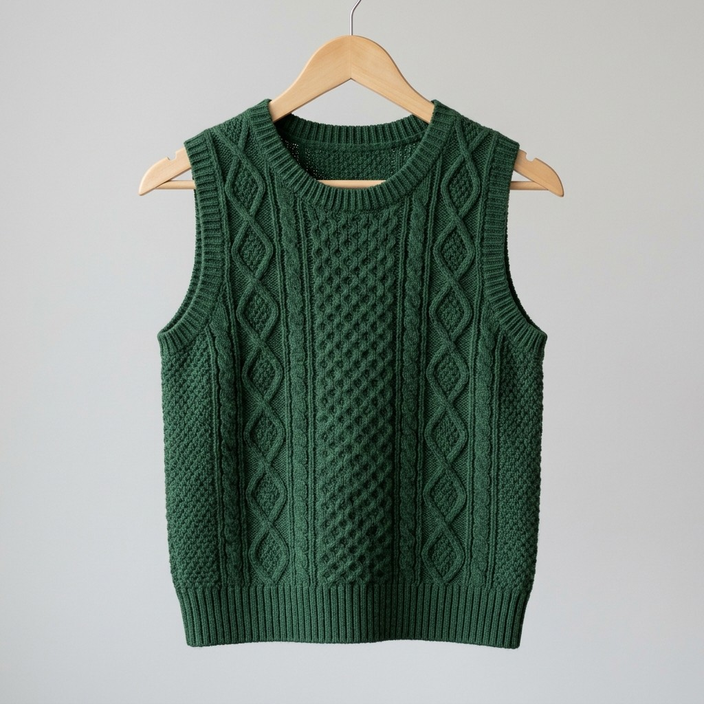
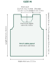
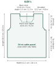
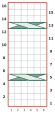
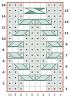
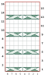
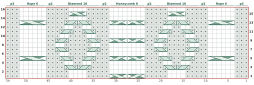

ENGLISH KNITTING PATTERN | WOMEN'S M & L | CHARTED TECHNICAL EDITION

Cover image is a styling illustration; texture details may differ slightly from the charted design. Work from the charts and written instructions.
| Size | M | L |
|---|---|---|
| Finished chest after side seams | 86.7 cm / 34.1 in | 100 cm / 39.4 in |
| Body length | 55.8 cm / 22.0 in | 58.3 cm / 23.0 in |
| Washed gauge | 18 sts × 24 rows = 10 cm / 4 in | Same gauge |
| Construction | Worked flat; seamed; bands in the round | Same |
Choose a size from the finished measurements, not from the M/L label alone: compare the finished chest with your bust measurement; the difference is the ease. The same 54-stitch cable panel is used in both sizes; size L gains width in the side fields.
Size notation. In the text, numbers are given as M (L), for example “CO 80 (92) sts”. Where only one number is given, it applies to both sizes. Tables give each size in its own column.
| Checkpoint | M | L |
|---|---|---|
| Cast on, each body piece | 80 sts | 92 sts |
| Side fields / centre panel | 13 + 54 + 13 sts | 19 + 54 + 19 sts |
| Piece width before seam take-up | 44.4 cm / 17.5 in | 51.1 cm / 20.1 in |
| Finished chest after side seams | 86.7 cm / 34.1 in | 100 cm / 39.4 in |
| Body length | 55.8 cm / 22.0 in | 58.3 cm / 23.0 in |
| Armhole depth | 20.0 cm / 7.9 in | 21.7 cm / 8.5 in |
| Shoulder width, each side | 18 sts / 10.0 cm / 3.9 in | 22 sts / 12.2 cm / 4.8 in |
| Back neck width | 28 sts / 15.6 cm / 6.1 in | 32 sts / 17.8 cm / 7.0 in |
| Front neck depth, approx. | 10.0 cm / 3.9 in | 10.8 cm / 4.3 in |
Lengths are measured before the shoulder bind-off row.
| Item | M | L |
|---|---|---|
| Yarn | Approx. 900 m / 984 yd | Approx. 1050 m / 1148 yd |
| Yarn weight | Medium / worsted / Aran with clear cable definition | Same |
| Body needles | 4.5 mm (US 7) straight or circular for working flat, or size needed for gauge | Same |
| Rib and band needles | 4.0 mm (US 6) for cast-on and lower rib; 4.0 mm (US 6) 40 cm (16 in) circular, or DPNs / magic loop, for the bands | Same |
| Notions | Cable needle, 2 stitch markers plus 1 for the bands, stitch holders or scrap yarn, darning needle, tape measure | Same |


Drawn to scale, both sizes at the same scale. Solid outline: back. Dashed line: front neckline (the front is otherwise identical to the back). Measurements are before bands.
Front and back are worked separately from the lower hem upward. Side seams and shoulder seams are sewn after blocking. Armhole and neckline ribs are then picked up and worked in the round.
Global row 1 is the first rib row (RS); all odd global rows are RS rows. The cable pattern begins on global row 13. Cable pattern row = ((global row − 13) mod 16) + 1. Keep the cable repeat running continuously through armhole shaping until a neckline removes part of a motif.
| Shaping point | M | L |
|---|---|---|
| Rib | Rows 1–12 | Rows 1–12 |
| Straight body | Rows 13–86 | Rows 13–88 |
| Armhole shaping | Rows 87–95 | Rows 89–97 |
| Front neck split | Row 111 (pattern row 3) | Row 115 (pattern row 7) |
| Back neck split | Row 127 (pattern row 3) | Row 133 (pattern row 9) |
| Shoulder bind-off | Row 135 | Row 141 |
Charts show the fabric as it looks from the right side. Chart columns are numbered from the right: column 1 is the rightmost cell, the first stitch worked on an RS row. Read RS chart rows (odd numbers, given at the right edge) from right to left, starting at column 1, and WS chart rows (even numbers, given at the left edge) from left to right. On WS rows, work stitches as they appear: knit a purl-bump stitch and purl a knit-V stitch. This preserves the RS texture.
| Symbol | Code | Sts | Exact action |
|---|---|---|---|
| k | 1 | Knit on RS, purl on WS. | |
| p | 1 | Purl on RS, knit on WS. | |
| C4F | 4 | Slip 2 sts to cn and hold in front; k2; k2 from cn. | |
| C4B | 4 | Slip 2 sts to cn and hold in back; k2; k2 from cn. | |
| C6F | 6 | Slip 3 sts to cn and hold in front; k3; k3 from cn. | |
| T3F | 3 | Slip 2 knit sts to cn and hold in front; p1; k2 from cn. Worked over K-K-P (in working order). | |
| T3B | 3 | Slip 1 purl st to cn and hold in back; k2; p1 from cn. Worked over P-K-K (in working order). | |
| Repeat | Red outline: rows 1–16 form the repeat; work them over and over. | ||
A cable symbol covers all the cells of its stitches. Front crossings (C4F, C6F, T3F): the top strand runs from lower right to upper left. Back crossings (C4B, T3B): the top strand runs from lower left to upper right.
Total centre panel = 54 stitches. The block layout is symmetrical; work the cables exactly as charted/written (cable directions are not mirrored). Keep markers exactly 54 stitches apart until neckline shaping cuts into the panel.
16-row master repeat. Odd (RS) row numbers are at the right edge; read these rows from right to left, starting at column 1. Even (WS) row numbers are at the left edge; read these rows from left to right. Numbers under each chart are column numbers within the motif; column 1 is the rightmost cell.



The Diamond 10 motif is a travelling-cable diamond. Its crossings are arranged so T3B is only worked across P-K-K and T3F only across K-K-P (in working order). This keeps the two knit strands travelling cleanly through a six-stitch purl background without changing the stitch count.
Rope 6 and Honeycomb 8 are all-knit cable fields on the RS; their WS rows are purled. Diamond background stitches remain purl on the RS and knit on the WS.
Charted as seen from the RS. Odd (RS) rows: numbers at the right; read right to left, starting at column 1. Even (WS) rows: numbers at the left; read left to right. Column numbers are shown below the chart; column 1 is the rightmost cell.

Place a marker before and after these 54 stitches. Repeat chart rows 1–16 continuously. The written directions on the next page match this chart row for row. Cable actions are defined in section 03.
On every RS row, work the panel in this fixed order: p3 | Rope 6 | p2 | Diamond 10 | p2 | Honeycomb 8 | p2 | Diamond 10 | p2 | Rope 6 | p3. Each Rope and each Diamond is worked exactly as given in its column.
| Pattern row (RS) | Rope 6 – each | Diamond 10 – each | Honeycomb 8 |
|---|---|---|---|
| 1 | k6 | p3, k4, p3 | C4B, C4F |
| 3 | k6 | p2, T3B, T3F, p2 | k8 |
| 5 | C6F | p1, T3B, p2, T3F, p1 | C4F, C4B |
| 7 | k6 | T3B, p4, T3F | k8 |
| 9 | k6 | T3F, p4, T3B | C4B, C4F |
| 11 | k6 | p1, T3F, p2, T3B, p1 | k8 |
| 13 | C6F | p2, T3F, T3B, p2 | C4F, C4B |
| 15 | k6 | p3, C4F, p3 | k8 |
Example – pattern row 1 written out: p3, k6, p2, p3, k4, p3, p2, C4B, C4F, p2, p3, k4, p3, p2, k6, p3 (54 sts).
Work stitches exactly as they appear on the WS: knit the stitches that look like purl bumps and purl the stitches that look like knit Vs. In practical terms, Rope and Honeycomb are purled across on WS rows; Diamond knit strands are purled and its purl background is knitted. The 54-st count does not change on any row.
Front and back are worked the same way except for the first rib row and the set-up of the seed fields, given separately below.
With 4.0 mm (US 6) needles, CO 80 (92) sts.
The front and back start the rib differently so that, after one stitch from each piece is taken into each side seam, the k2, p2 rib runs continuously around the body. Checkpoint: 80 (92) sts.
Change to 4.5 mm (US 7) needles. Work panel row 1 from the chart (section 05) or the written instructions (section 06). The seed fields are listed in working order: “first field” is worked at the start of the RS row, “second field” after the panel.
| Piece | Size | Row start – panel – row end | Total |
|---|---|---|---|
| Front | M | k1 (selvedge), (k1, p1) 6 times, pm, panel row 1 over 54 sts, pm, (p1, k1) 6 times, k1 (selvedge) | 80 sts |
| Front | L | k1 (selvedge), (k1, p1) 9 times, pm, panel row 1 over 54 sts, pm, (p1, k1) 9 times, k1 (selvedge) | 92 sts |
| Back | M | k1 (selvedge), (p1, k1) 6 times, pm, panel row 1 over 54 sts, pm, (k1, p1) 6 times, k1 (selvedge) | 80 sts |
| Back | L | k1 (selvedge), (p1, k1) 9 times, pm, panel row 1 over 54 sts, pm, (k1, p1) 9 times, k1 (selvedge) | 92 sts |
Continue in pattern as set through global row 86 (88) – this is pattern row 10 (12), a WS row. 80 (92) sts remain.
Length check: the piece now measures approx. 35.8 (36.7) cm / 14.1 (14.4) in from the CO edge, measured flat. Work by the row numbers, not by length: the row numbers set the cable phase for the shaping. If your row gauge differs from 24 rows per 10 cm, the length to the underarm (and the total length) will differ in proportion.
Continue the cable panel and seed fields as set throughout. Work the back first or second; it is shaped as follows.
| Action | M | L |
|---|---|---|
| First armhole row, RS | Row 87: BO 4 at row start, work to end – 76 sts | Row 89: BO 4 at row start, work to end – 88 sts |
| Next row, WS | Row 88: BO 4 at row start, work to end – 72 sts | Row 90: BO 4 at row start, work to end – 84 sts |
| 4 RS decrease rows | Rows 89, 91, 93, 95: dec 1 at EACH edge → 70, 68, 66, 64 sts | Rows 91, 93, 95, 97: dec 1 at EACH edge → 82, 80, 78, 76 sts |
| Work even | Rows 96–126 on 64 sts | Rows 98–132 on 76 sts |
| Back neck split, RS | Row 127: work 18 sts and slip them to a holder; BO the next 28 sts; work to end – 18 sts | Row 133: work 22 sts and slip them to a holder; BO the next 32 sts; work to end – 22 sts |
| Shoulders | Work each shoulder through row 134; BO 18 sts on row 135 | Work each shoulder through row 140; BO 22 sts on row 141 |
On each BO row, bind off 4 sts in pattern; the stitch on the right needle after the last BO counts as the first stitch of the rest of the row. From now on the new edge stitch at each armhole is a selvedge stitch: knit on RS, purl on WS.
On each listed RS decrease row: k1, ssk; maintain the remaining seed field; work the complete 54-st panel; maintain the opposite seed field to the last 3 sts; k2tog, k1. Each decrease row removes exactly 2 stitches. Work every WS row in between without decreases (p1, pattern to last st, p1). Checkpoint after the last decrease: 64 (76) sts – 54 panel sts and 5 (11) sts outside each marker.
On row 127 (133): work 18 (22) sts and slip them to a holder; BO the next 28 (32) sts in pattern without crossings (the st on the right needle after the last BO counts as the first of the remaining sts); work to end – 18 (22) sts. Checkpoint: 18 (22) / 28 (32) bound off / 18 (22).
After the centre neck bind-off, continue the second shoulder first (the sts on the needle). Work its next row as the required WS row (row 128 (134)) and continue to the final WS row 134 (140), then bind off all 18 (22) sts in pattern on RS row 135 (141). Rejoin yarn with WS facing at the neck edge of the held first shoulder and work the same row numbers so both shoulder tops finish at exactly the same height.
Work the front exactly as the back through completion of armhole shaping. The front neckline starts earlier.
| Action | M | L |
|---|---|---|
| After armhole shaping | 64 sts after row 95 | 76 sts after row 97 |
| Work even | Rows 96–110 | Rows 98–114 |
| Front neck split, RS | Row 111: work 22 sts and slip them to a holder; BO the next 20 sts; work to end – 22 sts | Row 115: work 26 sts and slip them to a holder; BO the next 24 sts; work to end – 26 sts |
| Neck decreases | Rows 113, 115, 117, 119: dec 1 at neck edge → 21, 20, 19, 18 sts | Rows 117, 119, 121, 123: dec 1 at neck edge → 25, 24, 23, 22 sts |
| Finish | Keep 18 sts through row 134; BO row 135 | Keep 22 sts through row 140; BO row 141 |
On row 111 (115): work 22 (26) sts and slip them to a holder; BO the next 20 (24) sts in pattern without crossings (the st on the right needle after the last BO counts as the first of the remaining sts); work to end – 22 (26) sts. Checkpoint: 22 (26) / 20 (24) bound off / 22 (26).
| M | L | |
|---|---|---|
| Target pickup | 80 sts around EACH armhole | 88 sts around EACH armhole |
| Guide per half | 4 sts across underarm BO + about 36 along shaped/vertical edge | 4 sts across underarm BO + about 40 along shaped/vertical edge |
With RS facing and the 4.0 mm (US 6) 40 cm (16 in) circular needle (or DPNs / magic loop), begin at the underarm seam. Pick up the first half to the shoulder seam and mirror it on the second half. Pm for the beginning of the round and join to work in the round. Confirm the total, 80 (88) sts, before knitting the rib.
| M – 92 sts total | L – 104 sts total | |
|---|---|---|
| Horizontal edges | Back 28 + front centre 20 | Back 32 + front centre 24 |
| Shaped/vertical edges | 5 along each back-neck side + 17 along each front-neck slope | 5 along each back-neck side + 19 along each front-neck slope |
With RS facing and the 4.0 mm (US 6) circular needle, begin at the left shoulder seam (as worn) and pick up 17 (19) sts down the left front-neck slope, 20 (24) sts across the front centre BO, 17 (19) sts up the right front-neck slope, 5 sts down the right back-neck side, 28 (32) sts across the back neck BO and 5 sts up the left back-neck side – 92 (104) sts. Pm and join to work in the round.
Horizontal bound-off edges are picked up approximately 1 stitch per bound-off stitch. Along row-end edges pick up slightly fewer than 3 sts for every 4 rows, as given in the table, so the band sits snugly. The totals are multiples of 4 for the 2×2 rib.
For both armholes and the neckline: work 6 rounds of *k2, p2; rep from * around. Bind off loosely in rib pattern. If a band visibly pulls inward or flares after a trial round, redistribute the pickups and adjust the total by a multiple of 4 rather than forcing the edge flat during blocking.
| Checkpoint | M target | L target |
|---|---|---|
| After rib, global row 12 | 80 sts | 92 sts |
| After both underarm BO rows | 72 sts at row 88 | 84 sts at row 90 |
| After last armhole decrease | 64 sts at row 95 | 76 sts at row 97 |
| Front immediately after neck split | 22 / 20 BO / 22 | 26 / 24 BO / 26 |
| Front after 4 neck decreases | 18 each shoulder | 22 each shoulder |
| Back immediately after neck split | 18 / 28 BO / 18 | 22 / 32 BO / 22 |
| Armhole pickup target | 80 per opening | 88 per opening |
| Neckline pickup target | 92 total | 104 total |
PERSONAL USE: Finished garments may be sold in small quantities. Please do not redistribute, translate, share or resell the PDF instructions.